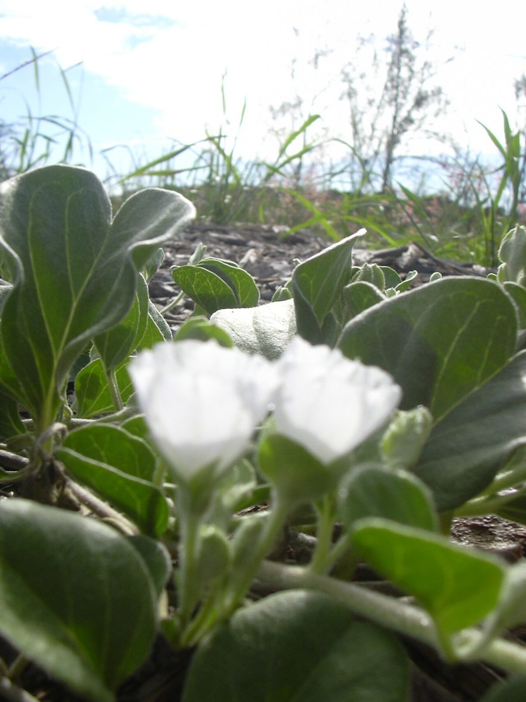
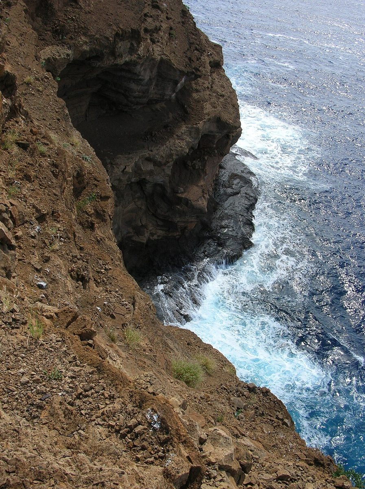

COMMON Beach strand Dune
Jacquemontia ovalifolia subsp. sandwicensis
pāʻū o Hiʻiaka · Hawaiian jacquemontia


Quick facts
| Family | Convolvulaceae |
|---|---|
| Scientific name | Jacquemontia ovalifolia subsp. sandwicensis |
| Hawaiian name(s) | pāʻū o Hiʻiaka |
| English name(s) | Hawaiian jacquemontia |
| Status | Endemic |
| Conservation | — |
| Coastal zones | Beach strand Dune |
| Occurrence | Kauaʻi coastal endemic subspecies (species range broader, but this Hawaiian subspecies is endemic to the archipelago). On the roadless coast it occurs as low trailing mats on stable open sand and coral rubble at Māhāʻulepū and above upper Nāpali beaches. |
How to identify
- Growth form
- A trailing morning-glory relative forming low creeping mats on open ground; stems slender, running along the surface rather than climbing.
- Size
- Trailing mats to 1–2 m across; only a few cm tall.
- Leaves
- Alternate, ovate to oblong-ovate, 1–3 cm long, thin, with entire margins and a slightly pointed tip; light green.
- Flowers
- Small (~1.5 cm across), funnelform, pale blue with a paler throat. Solitary or in small axillary clusters. Open in the morning and close by midday on hot days.
- Fruit / seed
- A small dry capsule with a few small seeds.
- Bark / stem
- Slender wiry green stems, hairy, running along the ground.
- Where it sits on the coast
- Open sandy strand, stable dune surfaces, and coral rubble flats above the wrack line. Not on rocky sea cliffs.
Clinchers (features that lock the ID)
- Small pale-blue funnelform morning-glory flowers on a low creeping mat.
- Slender trailing stems that run flat along the ground (do not climb).
- Alternate ovate light-green leaves ~1–3 cm long — much smaller than pōhuehue.
Look-alikes
- Ipomoea pes-caprae (pōhuehue) — Pōhuehue has much larger pink-purple funnelform flowers (5–6 cm across), notched two-lobed "goat's foot" leaves, and thicker rope-like vines that run for many metres.
- Ipomoea indica / other blue-flowered Ipomoea — Ipomoea indica is a robust climber with big deep-blue-to-purple funnelform flowers 6–8 cm across and heart-shaped or three-lobed leaves — a very different scale plant.
Ecology
Sand-stabilizing pioneer on open strand and dune. Salt-tolerant; low creeping habit ties down fine sediment. Its population on the roadless coast tracks the availability of undisturbed open sand. [16], [21], [22], [23]
Cultural significance
Pāʻū o Hiʻiaka — "the skirt of Hiʻiaka" — refers to the Hawaiian tradition in which the plant sheltered the infant goddess Hiʻiaka on the beach. The plant is named for that story; this guide records the association respectfully and does not provide harvest or use instructions, which belong to Hawaiian cultural transmission.